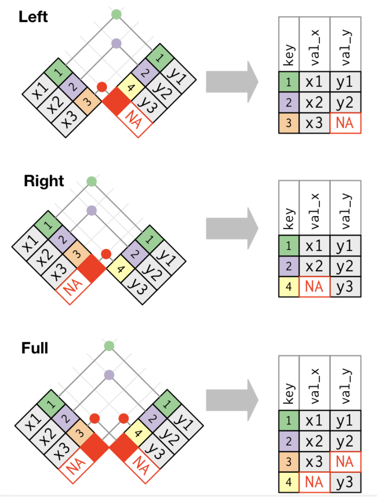

プレゼミ2023
第3回 Rの使い方・データ操作・可視化
Githubの学習


データの整形
データ操作の基礎
さあ面白くなってきました。 次はデータを操作していきます。 Rによるデータ操作では、tidyverseパッケージ群のdplyrパッケージが大活躍します。
dplyrパッケージの関数の中でもよく使うものに次のようなものがあります。
select(): 変数を選択するfilter(): データを抽出するmutate(): 変数を追加するarrange(): データを並び替えるsummarise(): データを集計するgroup_by(): データをグループ化する
パイプ演算子
Rでソースコードを書く際に，理解しやすく，読みやすいコードにするために非常に便利なのが，パイプ演算子%>%です。 パイプ演算子%>%は，左側のオブジェクトを右側の関数の第一引数に渡すという処理を行います。 たとえば，
と書くと，sqrt(1 + 2)と同じ意味になります。 たとえば，rnorm()関数を使って平均0，分散1の標準正規分から100個のデータを作りたいとします。 rnorm()関数は3つの引数を取ります。
- データの個数
- 平均
- 標準偏差
したがって，rnorm(100, 0, 1)と書くと，平均0，分散1の標準正規分布から100個のデータを取り出すことができます。 パイプ演算子を使うと，
[1] -1.3572553505 -0.7710737632 -0.6618599624 -0.7988408388 1.0090618543
[6] -0.3340209277 0.0896193000 -0.9493523195 -0.7184733584 0.8432990507
[11] -0.7044685529 0.1989936683 0.1327002721 0.7296222909 2.1343530120
[16] 0.6069824654 1.3135631689 -0.0682697473 0.0795486352 -0.4865497909
[21] 0.2793662569 -0.7318499328 1.9948081293 -0.5240042896 0.6693724106
[26] -0.1373570576 0.3975494475 -1.1730883943 0.5804554912 2.0022448469
[31] -1.1922907504 0.5263405922 -0.8672897422 -0.7023260588 0.9850621053
[36] -1.1937999304 1.0510909486 -0.7409995833 1.4609294835 0.2603021735
[41] -0.5999882475 0.0004803921 1.5092805619 -0.3160982542 -1.2363750464
[46] 0.3284615757 0.5450226068 0.7219884196 0.2583883443 1.7591655239
[51] 1.0704835073 -0.5982507043 -0.2333814875 -0.7108978513 2.0642714308
[56] -0.5108413970 1.0622618395 -0.6484187888 0.1223635187 -0.9351548591
[61] 1.4356191524 0.5092783644 -0.1540087426 -0.0735818383 1.5789669637
[66] -1.4464017347 -1.2063420363 -0.4591683164 1.3615933190 -1.1620947816
[71] 0.0186081714 0.9715703055 0.4629084237 0.2247816418 -1.1321945087
[76] 1.1269195608 -0.3608907292 -0.2676031527 1.1731795574 1.2457239013
[81] -0.1024710845 -0.8016963010 0.0278880220 -1.3034185402 -0.3291029627
[86] -1.3772863846 1.1300791759 0.8917810987 -0.5398358405 0.4477120872
[91] 1.8356142653 0.7915008872 -0.7114711412 -1.5891088971 0.0985616526
[96] 0.8965806004 0.9400073499 -0.0633376656 0.1656677422 -1.7665200226となります。 これはrnorm()関数の第1引数がデータの個数なので，そこに100を渡しています。 ここで平均に値を渡したい場合を考えます。 mean引数は第2引数なので，パイプ演算子では自動で渡してくれません。 そこで.を使って渡す場所を指定してあげます。
[1] 101.54154 101.42682 99.16352 99.33611 101.11846 99.04617 98.85759
[8] 99.93556 100.87995 99.45036 99.57699 99.39648 100.15111 100.40291
[15] 100.17771 98.56418 101.59425 100.94427 99.69069 99.97026 99.83996
[22] 98.85857 99.84139 101.99454 100.72582 100.47747 100.11478 98.64631
[29] 98.62543 100.54695 100.25609 99.69065 100.66338 99.70592 100.74064
[36] 99.44869 99.35655 100.35448 101.88179 99.46124 101.34836 99.45882
[43] 99.89461 100.87687 99.49584 98.95390 99.99676 99.93280 99.78675
[50] 98.46170 100.22099 101.04299 100.44883 100.65190 99.35712 100.91358
[57] 101.39737 99.36175 100.41494 99.87025 98.98592 99.95083 99.69378
[64] 99.67338 98.85939 99.63679 99.05609 99.04185 100.91275 100.14250
[71] 99.82527 99.72951 100.72688 99.01809 100.85382 101.06089 100.75543
[78] 99.40094 99.20164 98.08326 101.39560 100.26022 100.51790 99.99096
[85] 99.41935 100.51489 101.44580 98.89688 98.37876 100.64436 99.45143
[92] 98.85579 99.76324 100.84385 99.95757 99.27428 97.54577 100.81094
[99] 99.70464 99.52319これで平均100，標準偏差1の正規分布から100個のデータを取り出せました。
これだけだとパイプ演算子%>%の便利さが伝わらないので，たとえば次のような処理を考えてみましょう。
- 2020年のデータを抜き出し，
- 売上高当期純利益率を計算し，
- 産業グループごとに平均を計算する
- 利益率が高い順番に並び替える
をパイプ演算子を使って書くと，
のように，上から順番に処理を実行し，次に渡す，というプロセスが分かりやすく，読みやすいコードができました。 コメントも残しておけば，後から見返したときにも分かりやすいですし，他人によんでもらうときも親切ですね。 したがって，以下ではパイプ演算子を駆使して，データ操作を行っていきます。
新しい変数を作成する mutate
新しい変数を作成するには，dplyrパッケージのmutate()関数を使います。 先ほど読みこんだデータから，当期純利益を売上高で除して売上高当期純利益率を計算して，ratioという変数を作ってみましょう。
MS Excelの場合
I1のセルに変数名を表すratioと入力する。 F列のsaleとG列のnetincomeを使って，I2のセルに
= G2 / F2
とし，I2セルの右下の四角をダブルクリックすると，自動で下のセルにも同じ計算がコピーされる。
次に，ある変数の値に応じて異なる値をとる変数を作るには，mutate()関数とifelse()関数を同時に使います。ifelse()関数は次のような引数を取ります。
先ほど計算した売上高当期純利益率が5%以上ならば「高い」，そうでなければ「低い」という変数highlowを作ってみましょう。
MS Excelの場合
J1セルにhighlowと入力する。 J2セルに
= if(I2 >= 0.05, "高い", "低い")
と入力し，J2セルの右下の四角をダブルクリックすると，自動で下のセルにも同じ計算がコピーされる。
Excelだとセルの移動や変数名の入力，計算式の入力，セルのコピーといった作業で，キーボードとマウスを行ったり来たりする必要があり，若干面倒です。
ついでに，mutate()関数を使って，長すぎる企業名を短くしてみます。 ここでは「ポーラ・オルビスホールディングス」を「ポーラ」と略してみます。 mutate()とifelseを使って，name変数の値が「ポーラ・オルビスホールディング」ならば「ポーラ」という値をとる変数name上書きします。を作ってみましょう。
データを抽出する filter
データを抽出するには，dplyrパッケージのfilter()関数を使います。 filter()関数は，次のような引数を取ります。
先ほど作成したratio2が「高い」企業だけを抽出してみましょう。 filter()関数の中の条件は，==を使って，"高い"という文字列と一致するかどうかを確認しています。 ここでは，highlow変数の値が"高い"と一致する企業だけを抽出し，df_highという変数に代入しています。
MS Excelの場合
highlow変数のあるJ列をクリックして枠を移動させ，上の「ホーム」メニューから「並び替えとフィルター」をクリックし，「フィルター」をクリックする。 すると，変数名highlowのヨコに漏斗のようなマークが出るので，それをクリックすると，記録されたデータの種類が出てくるので，「高い」だけにチェックが入った状態にする。
Excelのクリック回数が増えてきましたね。
filter()関数の中で指定する条件は，
==: 一致する!=: 一致しない>=や<=: 以上や以下>や<: より大きいや小さい%in%: いずれかに一致する
などがあります。またこれらの条件を組み合わせることもできます。 その場合は，以下のように&や|を使います。
&: かつ|: または
たとえば，資生堂と花王を抽出したり，売上高当期純利益率が5%以上かつ売上高が1000億円以上の企業を抽出するには， 次のように書きます。
変数を選択する select
データの中から必要な変数だけを選択するには，dplyrパッケージのselect()関数を使います。 たとえば，先ほど作成したdfから，企業コード，企業名，売上高当期純利益率の3つの変数だけを選択してみましょう。
MS Excelの場合
オリジナルのデータをコピーして，下のタブから別のシートを選択し，そこに貼り付ける。
貼り付けたデータからcodeとnameとratio以外の列を削除する。
MS Excelだと，不要なデータを削除するのが怖い作業で，必要になったときにまた元のデータを読み込まないといけないので，面倒ですし，ミスのもとです。
select()関数の中で使えるものには，以下のようなものがあります。 とても便利なので，覚えておくとよいでしょう。
-: 除外する (-ratioとかくとratio以外を選択):: 連続する変数を選択 (code:renと書くとcodeからrenまでを選択)starts_with(): ある文字列で始まる変数を選択ends_with(): ある文字列で終わる変数を選択
たとえば，mutate()で新しい変数を作る場合に，変数名に法則性をつけておけば，starts_with()を使って一気に変数を選択することができます。 たとえば，比率を表す変数はratioで始まるように統一しておく，基準化した変数には_Kを最後に付けておく，などです。
データを並び替える arrange
データを並び替えるには，dplyrパッケージのarrange()関数を使います。 たとえば，先ほど作成したdfから，売上高当期純利益率を並び替えてみましょう。
小さい順に並び替えられました。 大きい順にするには，desc()関数を使います。 ついでにknitrパッケージのkabble()関数で表を見やすく加工してみます。
これでどの企業のどの年度の売上高当期純利益率が大きいのかが一目瞭然になりました。
MS Excelだと，
MS Excelの場合
「ホーム」メニューから「並び替えとフィルター」をクリックし，「昇順」をクリックする。
必要なデータだけ選択してコピペすれば，表が完成します。
となります。 簡単ですが，MS Excelの並び替えは注意が必要で，並び替えた後にデータを追加すると，並び替えが解除されてしまい，元に戻せなくなったり，空列があると並び替えがうまくいかなかったりします。
long形式とwide形式
人間には読みやすいけれどパソコンは読みにくい，というデータの形式があります。 例えば下の表を見てみましょう。
| 地点 | 6時 | 12時 | 18時 |
|---|---|---|---|
| 札幌 | 12℃ | 15℃ | 13℃ |
| 大阪 | 20℃ | 24℃ | 22℃ |
| 福岡 | 23℃ | 25℃ | 25℃ |
このような形のデータをワイド形式(wide)といいます。 天気予報で見かけそうなこの表は，人間にとっては分かりやすいですが，実はコンピュータにとっては，分かりにくいものです。 コンピュータが理解しやすいデータとして表すなら，次のような表になります。
| 地点 | 時間 | 気温(℃) |
|---|---|---|
| 札幌 | 6時 | 12 |
| 札幌 | 12時 | 15 |
| 札幌 | 18時 | 13 |
| 大阪 | 6時 | 20 |
| 大阪 | 12時 | 24 |
| 大阪 | 18時 | 22 |
| 福岡 | 6時 | 23 |
| 福岡 | 12時 | 25 |
| 福岡 | 18時 | 25 |
このような形式のデータをロング型(long)といいます。 このロング型のうち，一定のルールに従って作成されたデータを整然データ(tidy data)といい，Rでは，この整然データを扱うことが多いです。
R神Hadley Wickham氏は，データの型を理解することを，データ分析の第一歩とし，その一貫として整然データという考え方を提唱しています。 整然データとは，次のような原則に従って構築されたデータのことです(Wickham, 2014) 参考https://id.fnshr.info/2017/01/09/tidy-data-intro/。
- 個々の変数 (variable) が1つの列 (column) をなす。
- 個々の観測 (observation) が1つの行 (row) をなす。
- 個々の観測の構成単位の類型 (type of observational unit) が1つの表 (table) をなす。
- 個々の値 (value) が1つのセル (cell) をなす
上の表は，地点，時間，天気，気温の4つの変数があり1つの列をつくっています(ルール1)。 大阪12時の天気は雨，気温は12℃といったように1つの行が1つの観測を表しています(ルール2)。 このデータには種類の異なる観測はない(ルール3)。 また，各セルには1つの値が入っています(ルール4)。 よって，これが整然データとなります。
上のロング型の天気データを使って，ロングからワイド，ワイドからロングの操作を学びましょう。
まずデータを作ります。
df_weather <- data.frame(
place = c("札幌","札幌","札幌","大阪","大阪","大阪","福岡","福岡","福岡"), # 各地を3個ずつ
time = rep(c("6時", "12時", "18時"),3),
temp = c(12,15,13,20,24,22,23,25,25)
)
print(df_weather) place time temp
1 札幌 6時 12
2 札幌 12時 15
3 札幌 18時 13
4 大阪 6時 20
5 大阪 12時 24
6 大阪 18時 22
7 福岡 6時 23
8 福岡 12時 25
9 福岡 18時 25これはロング型の整然データとなります。
ロングからワイド pivot_wider
Rで使うならこのままでよいのですが，あえてこれをワイド型に変えてみましょう。
教科書で使用されているspread()は「根本的に設計ミスってた」と公式で発表されているので，R神が作ったpivot_wider()を使います。widerという名前の通り，ワイド型に変換する関数です。
pivot_wider()の引数は，names_fromとvalues_fromです。names_fromは，ワイド型に変換するときに，どの変数を列にするかを指定します。values_fromは，ワイド型に変換するときに，どの変数の値を使うかを指定します。
以下のコードでは，time変数の値を列に，temp変数の値を値にして，df_wideという変数に代入しています。
# A tibble: 3 × 4
place `6時` `12時` `18時`
<chr> <dbl> <dbl> <dbl>
1 札幌 12 15 13
2 大阪 20 24 22
3 福岡 23 25 25これでワイド型に変換できました。
ワイドからロング pivot_longer
次に，このワイド型のデータをロング型に変換してみます。 教科書では，tidyrのgather()を使っていますが，これもwider()と同じ問題を持っているので，R神によるpivot_longer()を使います。
pivot_longer()の引数は，colsとnames_toとvalues_toです。
colsは，ロング型に変換するときに，どの変数を行にするかを指定names_toは，ロング型に変換するときに，どの変数の値を使うかを指定values_toは，ロング型に変換するときに，どの変数の値を使うかを指定
以下のコードでは，6時，12時，18時の3つの変数を行に，timeという変数の値を列に，tempという変数の値を値にして，df_longという変数に代入しています。
df_long <- df_wide %>%
pivot_longer(
cols = c("6時", "12時", "18時"), # 縦にする変数
names_to = "time", # 縦にした変数名
values_to = "temp") # 値
print(df_long)# A tibble: 9 × 3
place time temp
<chr> <chr> <dbl>
1 札幌 6時 12
2 札幌 12時 15
3 札幌 18時 13
4 大阪 6時 20
5 大阪 12時 24
6 大阪 18時 22
7 福岡 6時 23
8 福岡 12時 25
9 福岡 18時 25元のロング型に戻りました。
データの結合
別々のデータを結合させて使いたいことはよくあります。 例えば，次のようなデータを結合させる場合を考えてみましょう。
表A
| name | term | sale |
|---|---|---|
| トヨタ | 2020 | 1000 |
| トヨタ | 2021 | 900 |
| トヨタ | 2022 | 1400 |
| ホンダ | 2020 | 800 |
| ホンダ | 2021 | 700 |
| ホンダ | 2022 | 900 |
表B
| name | term | sale |
|---|---|---|
| 日産 | 2020 | 400 |
| 日産 | 2021 | 500 |
| 日産 | 2022 | 900 |
| マツダ | 2020 | 300 |
| マツダ | 2021 | 400 |
| マツダ | 2022 | 200 |
表C
| name | term | netincome |
|---|---|---|
| トヨタ | 2020 | 100 |
| トヨタ | 2021 | 90 |
| トヨタ | 2022 | 150 |
| ホンダ | 2020 | 140 |
| ホンダ | 2021 | 100 |
| ホンダ | 2022 | 90 |
| スバル | 2020 | 30 |
| スバル | 2021 | 35 |
| スバル | 2022 | 50 |
この3つのデータを結合させる場合を考えます。 まず表Aと表Bは同じ変数をもつデータなので，これらを結合させるには，縦につなげる必要があります。 このような結合を縦結合とか連結といいます。 縦結合は，dplyrパッケージのbind_rows()関数を使います。
name term sale
1 トヨタ 2020 1000
2 トヨタ 2021 900
3 トヨタ 2022 1400
4 ホンダ 2020 800
5 ホンダ 2021 700
6 ホンダ 2022 900
7 日産 2020 400
8 日産 2021 500
9 日産 2022 900
10 マツダ 2020 300
11 マツダ 2021 400
12 マツダ 2022 200縦に結合できたので，トヨタ，ホンダ，日産，マツダのデータが入ったデータベースdf_ABができました。
次に，このdf_ABとdf_Cを結合させます。 df_Cはnetincomeというdf_ABにはない変数があり，異なる変数をもつデータ同士の結合となります。 これらを結合させるには，横につなげる必要があります。 このような結合を結合といいます。
結合には，
- 内部結合(inner join)
- 外部結合(outer join)
があり，外部結合には，
- 完全結合(full join)
- 左結合(left join)
- 右結合(right join)
があります。
内部結合は両方のデータベースに存在する観測値のみを保持するため，多くのデータが欠落することになりますが，外部結合は、少なくとも1つのテーブルに存在する観測値を保持するので，大部分のデータが欠落することにはなりません。
3つの外部結合の特徴は次の通りです。
- 完全結合は、xとyのすべての観測値を保持します。
- 左結合は、xのすべての観測値を保持します。
- 右結合は、yのすべての観測値を保持します。
R神の神書籍R for Data Science (2e)の図がわかりやすいので，ここで紹介します。

内部結合と3つの外部結合をベン図で表すとこうなります。

最もよく使われる結合は左結合です。 元データに他のデータを結合する場合，元データに含まれるデータのみ保持したい場合が多いので，追加データを調べるときはいつもこれを使います。 左結合はデフォルトの結合であるべきで、他の結合を選択する強い理由がない限り、これを使用します。
では，df_ABとdf_Cを左結合してみましょう。 結合する際にキーとなる変数を指定する必要があります。 ここではnameとtermの2つの変数をキーとして指定します。 こうすることで，nameとtermが一致する観測値を結合します。
name term sale netincome
1 トヨタ 2020 1000 100
2 トヨタ 2021 900 90
3 トヨタ 2022 1400 150
4 ホンダ 2020 800 140
5 ホンダ 2021 700 100
6 ホンダ 2022 900 90
7 日産 2020 400 NA
8 日産 2021 500 NA
9 日産 2022 900 NA
10 マツダ 2020 300 NA
11 マツダ 2021 400 NA
12 マツダ 2022 200 NAdf_ABにはトヨタ，ホンダ，日産，マツダのデータがありますが，df_Cには日産とマツダのデータがなく，スバルのデータがあります。 そのため左結合すると，日産とマツダのnetincomeにはNAが入り，スバルは欠落します。
df_ABとdf_Cを右結合してみましょう。
name term sale netincome
1 トヨタ 2020 1000 100
2 トヨタ 2021 900 90
3 トヨタ 2022 1400 150
4 ホンダ 2020 800 140
5 ホンダ 2021 700 100
6 ホンダ 2022 900 90
7 スバル 2020 NA 30
8 スバル 2021 NA 35
9 スバル 2022 NA 50df_Cには日産とマツダのデータがなく，トヨタとホンダとスバルのデータがあります。 そのため右結合すると日産とマツダのデータが欠落し，df_Cに含まれていたトヨタ，ホンダ，スバルのデータが残ります。 しかしスバルのsaleにはNAが入ります。
最後に，df_ABとdf_Cを完全結合してみましょう。
name term sale netincome
1 トヨタ 2020 1000 100
2 トヨタ 2021 900 90
3 トヨタ 2022 1400 150
4 ホンダ 2020 800 140
5 ホンダ 2021 700 100
6 ホンダ 2022 900 90
7 日産 2020 400 NA
8 日産 2021 500 NA
9 日産 2022 900 NA
10 マツダ 2020 300 NA
11 マツダ 2021 400 NA
12 マツダ 2022 200 NA
13 スバル 2020 NA 30
14 スバル 2021 NA 35
15 スバル 2022 NA 50df_ABにはトヨタ，ホンダ，日産，マツダのデータがありますが，df_Cにはトヨタ，ホンダ，スバルのデータがあるため， 完全結合したdf_fullにはすべての企業のデータが入ります。 しかし，日産とマツダのnetincomeにはNAが入り，スバルのsaleにもNAが入ります。
このように，結合するデータによって，結合したデータに含まれるデータが変わるので，自分が望む結合後のデータの形を考えて，どの結合を使うかを選ぶ必要があります。
ついでに内部結合もやってみましょう。
name term sale netincome
1 トヨタ 2020 1000 100
2 トヨタ 2021 900 90
3 トヨタ 2022 1400 150
4 ホンダ 2020 800 140
5 ホンダ 2021 700 100
6 ホンダ 2022 900 90予想どおり，両方のデータに含まれているトヨタとホンダだけが残り，片方のデータにしか含まれていない日産，マツダ，スバルのデータは欠落してしまいました。 このように内部結合は，両方のデータに存在する観測値のみを保持するため，多くのデータが欠落することになり，利用する機会があまりないです。